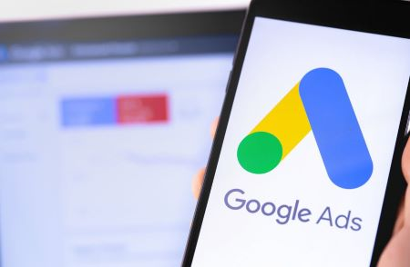

Campañas en Buscadores Google Adwords (SEM)
SEM es una estrategia de marketing digital que basa su plataforma publicitaria en anuncios dentro de los motores de búsqueda bajo el modelo de costo por click (CPC). Principalmente basamos nuestros esfuerzos en la herramienta de Google Adwords.